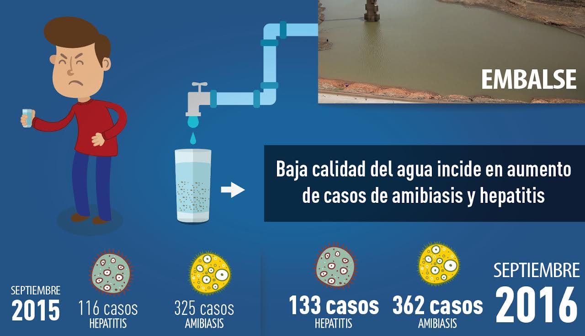

Contaminación del agua en Venezuela es tan grande que plantas potabilizadoras no pueden tratarla
Foto: Panorama | 29/09/2016
Daniela Moros | @Danii_moros
Los Teques, 29/09/2016. Desde cuadros diarreicos hasta dolencias cancerígenas y renales, pueden causar las bacterias y partículas metálicas que podrían estar presentes en las aguas que utiliza la población venezolana para las actividades del día a día.
Evelyn Pallotta, directora de Ecología y Ambiente Miranda, resaltó que de manera cualitativa se sabe que las aguas en Venezuela están contaminadas. “Cuando las personas abren el grifo en su casa, y el agua llega amarilla y con olor, esto representa un indicador cualitativo para saber que la calidad del vital líquido ha mermado”, sostuvo.
Similar opinión sostiene el ingeniero sanitario, Manuel Pérez Rodríguez, quien afirmó a BBC Mundo, en el mes de mayo, que la contaminación del agua en Venezuela tiene una magnitud tan grande que las plantas potabilizadoras en el país no pueden tratarla.
En este sentido, la titular de la cartera ambientalista del Gobierno de Miranda, aseguró que esta situación es consecuencia de que los mecanismos de los sistemas encargados de potabilizar el líquido de los diques no se están cumpliendo.
“La calidad del agua que le llega al embalse va variando, porque se va contaminando y lleva concentrada partículas de actividad humana, entonces las plantas de potabilización no actúan como deberían, porque fueron diseñadas para atender un tipo de agua específico. El agua en Venezuela está tan contaminada que resulta difícil su potabilización”, recalcó Pallotta.
Otros de los especialistas que han opinado sobre la calidad del agua en Venezuela, son el expresidente de Hidrocapital, José María De Viana y el ex ministro de Sanidad, José Félix Oletta, quienes han advertido que el agua actualmente presenta enterobacterias (Provenientes de los humanos), cianobacterias (Provenientes de las algas), así como residuos de metal (Originados por la actividad industrial).
Oletta, también miembro de la Red Defendamos la Epidemiología, sostiene que el mercurio, por ejemplo, es perjudicial para el riñón, mientras que el aluminio puede desarrollar una afección neurológica y las cianobacterias están relacionadas con cáncer.
El Epidemiólogo de Salud Miranda, Miguel Viscuña, señala que si el agua con nitratos, sustrato o aluminio, se consume, ésta también puede ocasionar daños en los riñones. Alerta que las personas con hipertensión pulmonar pueden resultar mayormente afectadas.
Viscuña afirma que la mala calidad del agua en Venezuela así como la falta de vigilancia de los embalses, está asociada además al incremento de casos de diarrea, hepatitis y amibiasis. “Las heces de una persona portadora de amibiasis y hepatitis entran por la vía digestiva y utilizan como vehículo el agua contaminada. En las épocas de lluvia intensa, en los sectores populares hay ruptura de sistema de aguas servidas, lo que contamina el líquido potable”.
Detalló que hasta mediados del mes de septiembre, la Red Francisco de Miranda reportó un acumulado de 14 mil 973 casos de diarrea, así como de 133 contagiados por hepatitis y 362 por amibiasis en lo que va de año 2016.
Dijo que con estas cifras, los casos de hepatitis se incrementaron 12,7% con relación al mismo periodo de 2015 cuando se reportaron 116; mientras que las amibiasis aumentaron 10,2%, al contabilizarse 325 contagios en el año anterior.
Recomendaciones
Con el objetivo de que la población prevenga las posibles enfermedades transmitidas a través del vital líquido, el epidemiólogo de Salud Miranda recomendó a la colectividad una serie de instrucciones para poder potabilizar el agua. Los pasos consisten en: colar el agua, filtrarla y hervirla, agregarle 5 gotas de cloro por litro, exponerla al sol por un rato y por último almacenarla en envases, para finalmente consumirla.
